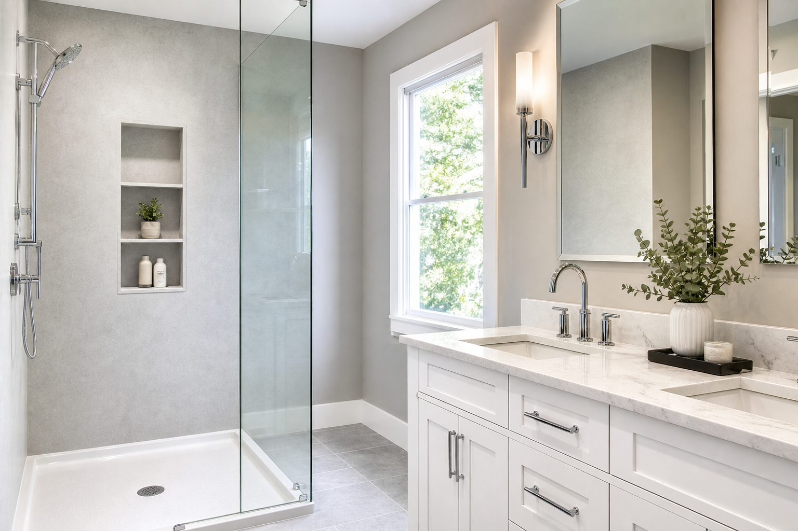

Solid Surface Acrylic Showers: Pros, Cons & Design Tips
If you are comparing shower finishes for a bathroom remodel, solid surface acrylic shower systems are one of the most searched options for a simple reason: they can deliver a clean, seamless look with less grout maintenance than many tile installations. This guide explains what homeowners usually like, what to watch for, and how to design details (like a shower niche) without regrets. Ready to scope it with a pro? Find bathroom remodel experts through The Local Pick.
What “solid surface acrylic†means in showers
In remodeling content online, “acrylic shower†can describe a few different product categories. For this article, we are focused on wall systems that read as seamless shower panels or large-format surfacing rather than tiny square tile grids.
Practically, that usually translates to fewer joints, faster wipe-down cleaning, and a contemporary look that pairs well with white vanities, quartz counters, and chrome or brushed nickel fixtures.
Pros and cons (honestly)
Pros homeowners often cite:
- Less grout maintenance than many tile layouts, especially in busy households.
- Clean visual lines that make a bathroom feel bright and intentional.
- Strong pairing with modern storage solutions like recessed niches.
Tradeoffs to plan for:
- Design flexibility can be more dependent on product lines than custom tile patterns.
- Waterproofing details still matter: seams, transitions, and penetrations must be handled by a qualified bathroom remodeler.
- Repairs are product-specific; discuss warranty and patch strategies with your installer.
What drives cost in a solid surface acrylic shower remodel
Even with “simpler†wall finishes, shower remodel pricing still clusters around the same big buckets: demolition, plumbing, waterproofing, glass, fixtures, and carpentry/finish work.
- Niches and benches add labor because they require careful framing and detailing.
- Glass (fixed panel vs door, hardware quality, measurements) can move the budget noticeably.
- Fixture upgrades (pressure balancing, thermostatic valves, handhelds) add cost but often improve daily comfort.
If you are budgeting, start with a “good/better/best†range for fixtures and glass, then choose wall finishes to match what remains. Use bathroom remodeling quotes to compare how each line item is scoped—not just the bottom line.
Design tips: niche, glass, and lighting
Niche placement: A recessed niche should be located where it does not conflict with studs, plumbing, or valve depth. If you want two shelves, decide shelf spacing based on bottle heights you actually use.
Glass strategy: Frameless glass looks premium, but the swing path and splash pattern matter near vanities. If space is tight, a fixed panel plus thoughtful showerhead aim can still feel open.
Lighting: Showers look best with layered lighting: good ambient light in the room plus a thoughtful plan for task brightness at the vanity. If you add a wet-zone light, discuss wet-location ratings with your electrician.
How it compares to tile (for planning)
Tile can offer maximum customization; solid surface acrylic shower systems often optimize for speed of cleaning and a consistent “sheet-like†appearance. Neither choice eliminates the need for skilled installation.
If you want a simple decision framework: choose surfacing based on maintenance tolerance, design direction, timeline, and the exact product samples you see in person.
FAQ
Are solid surface acrylic showers grout-free?
Many systems reduce grout compared with tile, but you should confirm the exact product and installation details with your contractor.
Do acrylic shower walls work with a recessed niche?
Yes, niches are common, but they should be planned early so waterproofing and structure are correct.